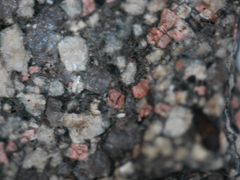
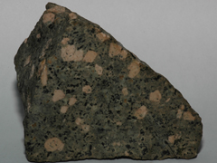
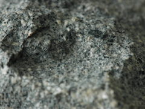
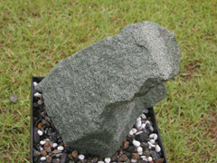
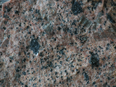
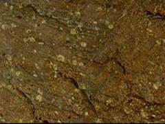
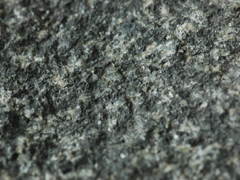
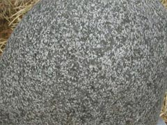

생성원리

정의 Definition
화성암은 용융상태의 마그마가 식어 고결된 암석으로 성인에 따라 크게 분출암과 관입압으로 구분됩니다. 반심성암은 심성암과 화산암 생성깊이의 중간위치에서 고결된 관입암으로 심성암에 비해 세립질이며 냉각속도차에 의해 반정과 석기로 구분되는 반상조직이 특징입니다. 대표적인 반심성암은 석영장석반암, 섬록반암, 섬장반암, 유문반암 등이 있습니다.
종류 Class
총 5종의 이미지가 있습니다.
- 
- 
이름 (name)
석영반암(quartz porphyry)
특 성 (characteristics)
- 가) 개요
- 광물성분과 화학성분은 화강암과 비슷하나 반상조직을 가지고 석기가 세립질인 반심성암이다. 반정은 주로 석영, 정장석, 사장석 등이며 규장질, 미화강암질, 미문상조직을 보여준다. 암맥 또는 용암류로 산출되며 화강암의 주변부에 수반되어 화강암질 마그마가 비교적 빠르게 냉각되어 만들어지기도 한다.
나) 광물구성
화강암과 유사하여,
| 석영(quartz) | 10~40% |
| K-장석(potash-feldspar) | 30~60% |
| 사장석(plagioclase) | 0~35% |
| 유색광물[흑운모(biotite), 각섬석(hornblend)] | 10~35% |
다) 산출지 : 한국
- 
- 
이름 (name)
섬록반암(diorite porphyry)
특 성 (characteristics)
- 가) 개요
- 섬록암과 화학성분과 광물조성이 흡사한 반심성암으로 회록색, 흑회색, 갈록색을 띠며 완정질 구조이다. 반정으로는 사장석(plagioclase), 각섬석(hornblend), 휘석(pyroxene, augite) 이 있으며, 주위에 미정질 부분은 반정과 유사한 광물들과 중성장석(andesine)으로 구성된다.
나) 광물구성
섬록암의 광물구성과 비슷하여,
| 사장석(andesine) | 55~70% |
| 유색광물[각섬석(hornblend) or 흑운모(biotite)] | 40~25% |
| 소량광물[휘석(pyroxene), 석영(quartz) 등] | 5~10% |
다) 산출지 : 미국, 미국, __(사진좌측부터)
- 
이름 (name)
섬장반암(syenite porphyry)
특 성 (characteristics)
- 가) 개요
- 섬장암(syenite)과 동일한 화학성분을 가지며, 장석을 주로 포함한다. 각섬석과 흑운모가 섞인 미정질 석기 속에 정장석(orthoclase)이 반정으로 된 반심성암이다.
나) 광물구성
섬장암의 광물구성과 동일하여,
| K-장석(potash-feldspar) | 30~80% |
| 사장석(plagioclase) | 5~25% |
| 유색광물(흑운모, 각섬석, 휘석) | 40~10% |
다) 산출지 : 미국
- 
이름 (name)
유문반암(rhyolite porphyry)
특 성 (characteristics)
- 가) 개요
- 유문암과 동일한 화학성분과 광물구성을 가지며, 미정질의 석기속에 석영, 장석의 반정이 포함된 반심성암이다.
나) 광물구성
유문암과 광물구성이 동일하여,
| 석영(quartz) | 10~40% |
| K-장석(potash-feldspar) | 30~60% |
| 사장석(plagioclase) | 0~35% |
| 유색광물[흑운모(biotite), 각섬석(hornblend)] | 10~35% |
다) 산출지 : 경북 청도, 경북 의성(사진좌측부터)
- 
- 
이름 (name)
휘록암(diabase)
특 성 (characteristics)
- 가) 개요
- 암록색, 흑록색, 회록색을 보여주는 고철질의 반심성암으로 조립현무암(dolerite)의 성분광물이 다소 변질하여 녹색을 띠게 되며 주성분광물로 Ca-사장석과 고철질광물(주로 휘석)을 다량 포함한다. 반려암(gabbro)에 비해 휘석이 적으며 현무암(basalt)보다 조립질이다. 영문식으로는 조립현현무암과 동의어이며, 이에 두 암석을 구분하지 않고 같은 암석으로 보는 학자도 있다..
나) 광물구성
| 유색광물[대부분 휘석(pyroxene)] | 65~25% |
| 사장석[조회장석(labradorite)] | 30~70% |
다) 산출지 : 미국, 미국, __(사진좌측부터)